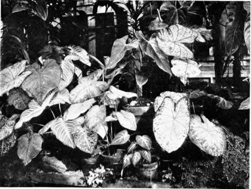

I. Soil For Pot Plants
Description
This section is from the book "Indoor Gardening", by Eben E. Rexford. Also available from Amazon: Indoor Gardening.
I. Soil For Pot Plants
MANY persons who love flowers have been prevented from attempting the culture of plants in the house because they have felt themselves unable to satisfactorily decide the question of soil. They have been told that each kind of plant adapted to culture indoors requires a soil of peculiar make-up, and that it cannot be grown well unless just the kind of soil it prefers is given; in other words, that plants are so arbitrary in their demands that they must have everything to suit them or they will sulkily refuse to respond to their owner's kindness. This is a mistake, as every amateur floriculturist will find out after a little. Most plants, like many persons, will endeavor to adapt themselves to conditions not entirely satisfactory, or to their liking, if their owner is willing to do all he or she can to remove obstacles in the way, which is only another way of saying that they will meet you halfway if you show a disposition to do the fair thing by them. Of course plants that have to make compromises with conditions cannot be expected to do themselves the justice they would under more favorable circumstances, but they often surprise us by the way in which they respond to the best treatment we can give them, even if it falls short, in many respects, of being what they would like. I believe that most persons who grow plants will agree with me that they seem to have an almost human ability to appreciate kindness and that they repay it by putting aside many of their personal preferences in a desire to please those who love them. In every community you will find persons who have the reputation of possessing a "knack" for growing plants satisfactorily. "Anything will grow for them," the neighbors will tell you. But this "knack" will be found to consist almost entirely in the care and attention these persons give their plants, out of their friendship for them. They do their best for their flowers, and they, in turn are ready to return the favor by making the best of existing conditions, and doing all possible for them to do under the circumstances. It is a belief of mine that no person can grow any plant successfully unless he or she has a real friendship for it. This sentimental view the matter-of-fact reader will doubtless laugh at, and explain that it isn't because of the existence of such a feeling that the plant does so well, but simply because we take pains to do everything possible for the plant's welfare. This may be true, from his standpoint, but the very fact that we do these things proves the existence of that which prompts us to such action.
In most books on floriculture we are told that the basis of good soil for pot-plants is garden-loam, varied by adding leaf-mold, manure, and sand. There is no good reason why the term "garden-loam" should be used in this connection, for loam from the garden is no better than any loam of good quality obtainable elsewhere. Leaf-mold is desirable, because it represents the finest quality of vegetable plant-food, but when we consider that probably not one in a hundred-possibly in a thousand-of the persons who attempt to grow plants are so situated that they can obtain it, it seems hardly consistent to advise its use. There is really no necessity for using it, since a substitute almost as valuable can be secured with very little trouble. This substitute consists of material that can be found in roadside, field, or pasture-lot. Turn over a square of sod, and you will find that immediately beneath the sward the soil is full of a multitude of tiny roots. Shave these away with the spade, cutting close to the crown of the grass, and you have a mass of light, spongy soil. When the roots comprising the largest part of it have decayed, it will be almost as rich in vegetable matter as soil procured from the woods. This, mixed with loam, will furnish excellent nutriment to nearly every plant adapted to culture in the house. To it should be added sand-clear, coarse, gritty sand- to facilitate drainage and secure the friability which will prevent the soil from becoming heavy and compact, as it very often does, under repeated applications of water, unless means are taken to avoid this unfavorable condition.
The proportions in which to combine loam, vegetable matter, and sand should vary, because the root-systems of all plants are not alike, those having very fine, thread-like roots, like the Heliotrope, Primula Obconica, and some of the Ferns, will do best in a soil wherein vegetable matter is largely in excess, only enough loam being used to give it " body.' Plants with larger roots require more loam and less vegetable matter. But sand should be used in about the same quantity, whether vegetable matter or loam predominates, as its office is largely that of a purifier and sweetener of the soil; therefore all plants are benefited by it. On no account should it be left out of a compost for house-plants if it is possible to procure it. Any soil with enough sand in it to make it friable will retain only a sufficient amount of water to meet the requirement of the plant growing in it; therefore, if drainage is what it ought to be, all danger from over-watering will be avoided. A soil without sand often becomes so compact and heavy that water is retained until it sours, and such a condition is sure to result in a diseased plant, sooner or later.
Fancy Caladiums.
I am aware that many amateur gardeners prefer to have formulas given for the preparation of potting-soil, being fearful of making mistakes if they trust to their own judgment, and for their benefit I would advise combining the various elements entering into it in the following proportions:
Loam, three parts, Vegetable matter, one part, Sand, one part, Mix well together.
When properly mixed, a soil made as above directed will be light and mellow, and will be found adapted to the needs of all ordinary plants, or, in other words, all plants whose roots are moderately strong. Before potting a new plant it is well to examine its root-system. If it is found to have delicate roots, add more vegetable matter. If its roots are very fine, use still more-making it the principal part of the soil, in fact. You will soon learn how to vary proportions to suit your plants if you make a practice of familiarizing yourself with their root-peculiarities, as every amateur gardener should. The person who achieves success in growing house-plants does so, largely, by studying the peculiarities of them as a mother does those of her children.
Some plants have but few roots, and these large, strong ones. As a general thing, such plants do not like a light, open soil. One of loam containing considerable clay, with vegetable matter left out, will suit them best. It 16 will therefore be seen that, while it is impossible to give exact proportions, for the soils in which plants having different kinds of roots are grown, an examination of these roots will enable us to adapt the soil to their peculiar requirements in a manner that will give very satisfactory results. My readers have no doubt all read of the painter who mixed his pigments with brains. Mix your potting-soil in the same way, and you will have few failures to charge it with.
A little intelligent observation will enable you to detect any mistakes that may be made, and these can easily be corrected by making such changes in the composition of the compost as seem to be called for by the plants you are growing. But do not expect to find out all these things unless you form the habit of watching your plants. Whenever a change is made, of any kind, observe the result carefully, and in a short time gardening will become an exact science with you rather than a series of problematic experiments. The successful gardener always has his eyes open when at work among his plants, and the consequence is that he is always "finding out things."
I have made no mention of the use of fertilizers in the preparation of potting-soil because I do not think a young, small plant requires a compost richer than the one already advised. But old plants, or plants that have outgrown the limits of small pots, may need more nutriment in the soil, and this can be supplied in two ways: By adding manure to the mixture, or by the application of fertilizers to the soil, in liquid or solid form. The best manure to make use of is that from the cow-yard, old enough to be readily broken under the hoe. Pulverizing this, and mixing it with the soil in the proportion of about one-fourth part, will give a compost quite rich enough for any plant. But, like leaf-mold, this kind of manure is seldom obtainable away from country neighborhoods; therefore a good substitute is advised. There are many plant-foods on the market, but I know of nothing better than fine bone-meal. This can be bought in any place where agricultural supplies are sold. Most florists can furnish it, though no doubt many of them will advise some pet "food" which will admit of greater profits. Mix the bone-meal with your potting-soil, if you conclude to use it, in the proportion of a teacup-ful to a half-bushel of the latter. Mix it in thoroughly, taking especial pains to pulverize all lumps that may be found. Should your plants not make as vigorous a growth as you think they ought, meal can be worked in about their roots, at any time, when they are not dormant. I prefer bone-meal to most of the liquid fertilizers sold, because it is more permanent in its effect, and seems to contain more of the real elements of plant-growth, while there is no danger of reaction after its application, as there almost always is when most so-called "foods" are used. Many of these are really nothing but stimulants, temporary in effect, therefore sure to be followed with disastrous results.
A very rich soil is not advisable for young plants, because it has a tendency to force a rapid growth, which one should always strive to avoid. A steady, sturdy, healthy growth is to be aimed at, and one should be satisfied with that.
.Many writers advise baking potting-soil, to kill larvae in it. Never do this. Baking will rob it of all its best qualities, and make it almost worthless.
Care should be taken to have the sand you use pure sand-not a mixture of sand and clay or some other soil, which will become muddy under the application of water. The more grit there is in the sand the better.
Some advise sifting the soil. I would not do this, for it removes the fine roots which when they decay add much to its nutritive qualities. If your compost is mixed well, sifting will not be found necessary.
Continue to:
- prev: Foreword
- Table of Contents
- next: II. Pots And Saucers